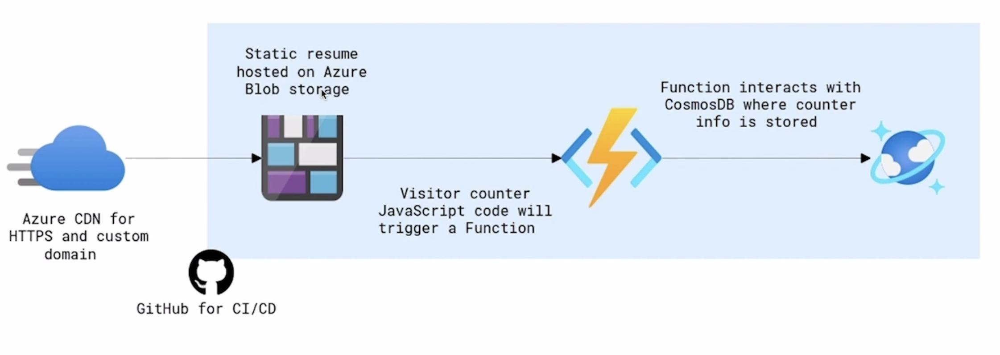

Azure CV
Built a cloud-based CV website (this site) using
Azure. This project demonstrates my ability to
integrate Azure Blob Storage,
Azure Functions, and Cosmos DB.
Key Highlights:
- 🚀 **Azure Hosting**: Static CV hosted on Azure Blob Storage.
-
⚡ **Visitor Counter**: Implemented using JavaScript and an Azure
Function, connected to Cosmos DB for storing visit data.
-
🌐 **Azure CDN**: Used for HTTPS and custom domain integration,
improving performance and security.
-
🛠️ **CI/CD with GitHub**: Set up automated deployment through GitHub
Actions.

Azure CV Architecture
Challenges Faced:
-
🛠️ **Azure Function Integration**: Debugging and testing the
interaction between the function and Cosmos DB took time.
-
📄 **CDN & Custom Domain Setup**: Configuring the Azure CDN with
HTTPS and a custom domain required careful planning.
Areas for Improvement:
-
⚙️ **Code Optimization**: Improve efficiency in the visitor
counter's code to handle higher traffic.
-
🔔 **Error Handling**: Strengthen error handling and logging within
the Azure Function.
-
📊 **Data Visualization**: Add a dashboard to visualize visitor
count trends in real-time.
Skills Demonstrated:
-
✅ **Azure Blob Storage**: Hosting and serving static content
efficiently.
-
✅ **Azure Functions**: Building serverless code to handle visitor
count tracking.
-
✅ **Cosmos DB**: Managing the storage and retrieval of visitor
data.
-
✅ **GitHub CI/CD**: Automated deployment to Azure for seamless
updates.